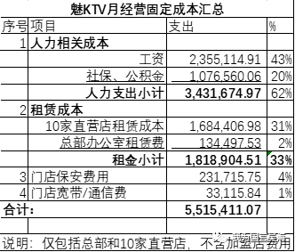

有序复工与做好防疫，一个都不能少！
原文链接 备份链接 _ 2月10日这个周一，中国多个省市迎来了春节后第一个工作日，虽然比原定假期已推迟一周，但政府、企业和个人所面临的疫情防控压力都不小。当前，湖北省仍需要着力抓好疫情防控，其他地区也需要做好防控的同时有序恢复生产 _ …
实际上，我就是个做KTV的没有文化的土鳖小老板。
我觉得各地帮助中小微企业的政策没有太大的蛋用，反正根据这个政策我们还是死路一条。
所以，我尝试根据自己企业情况指出了问题，也提了些建议，供参考！
免责申明：
也许我理解不对，我不懂高深理论，我就懂没钱就发不了工资员工就会失业，员工都失业国家经济就完了，经济完了老百姓就没法过幸福生活，就没法完成中国梦了，所以，这次国家决定帮助解决就业人数最多的中小微企业。
虽然我是区里的政协委员，但是和其他委员比起来我的政治觉悟还不够高，理论水平也不行，说错了请组织多担待。
正文：
现在企业面临的市场问题实际上是个信心问题，只要疫情能解决，时间可以修复一切信心问题。
所以，政府不用操心市场信心问题，你们的工作是争取帮我们活到那一天。
一．按现在的政策，我们能活两个月
能活到哪一天是个简单的数学题：
你每个月不开业的开销是多少？
你手上还有多少钱？

这是12月财务固定支出数字（不含研发支出），估计费用组成和其他线下中小微企业差不多
我们账上还有1200万左右。
我们能活的时间：
\=1200万➗5,515,411.07
\=2.176月
也就是说正常情况下我们不营业没收入能撑两个月
也就是说4月份我们会死翘翘，除非投资人接着投钱。
如果死掉的话失业的不只是公司200多号人的问题，因为我算的只是直营店和总部。
“魅KTV”实际有100家店，50多家营业，剩下在筹建阶段，已经是全国最大的中高端KTV品牌。
如果我们破产，实际失业的人数有1500人左右，总的投资损失约4亿元。
更麻烦的是，我们的加盟商大部分是做酒店加盟的，而酒店这次受得损失已经很大了，我们要是破产的话也可能会引起他们做得酒店也破产的连锁反应。
（说明一下：不要提到KTV就皱眉头，我做的“魅KTV”是纯绿色、量贩式、没有小姐、不是夜总会！！是高科技的、消费升级的、鼓励唱红歌的文化产业，看着像是国家鼓励发展的产业都集一身的企业）
二、为什么现在出台的政策对绝大多数中小微企业基本没什么蛋用？
比较简单，企业现在首要任务是活到市场恢复的那一天，要活得久无非是开源节流，解决现金流问题。
先说开源自救：
开源无非是两条路：自己种粮填肚子，或者，借粮填肚子。
种粮填肚子
Ktv和影院、健身房一样属于人口密集的地方，政府强制关停。
地方政府鼓励线上开展业务
呵呵，哭穷的西贝还能做个外卖，做KTV的连外卖都做不了
西贝是生意不好不开门，我是政府干脆不让开门（说白了，让开门我也不想开，怕不安全）。
所以，种粮填肚子不可能。
借粮填肚子
各地政府出台的政策里还真有一大堆银行贷款的政策。
我想请问一下，没有固定资产抵押，不让开业所以没有营业现金流抵押，有哪个中小微企业贷到款？
银行不愿意贷款，政府又让银行贷款，那这个款最后贷给了谁？
最终，我估计贷给两类人：
一类是有固定资产但是风险较大以前贷不到款的企业；
另外一类就是以前贷过款还还不上的企业，美其名曰叫做不抽贷。
总之，这两类跟我们都没关系
但是，给这两类企业贷款的结果就是饮鸩止渴，企业该死的还是死掉，未来大批坏账。
所以，银行贷款就别扯风险大的中小微企业了，还是贷给能够拉动内需暂时有困难的大企业吧。
所以，中小微企业贷款支持属于扯淡
愿意给我贷款的银行请出来走两步？借粮填肚子不可能！
再说节流
开源不可能，就节流自救吧
按照官僚的惯用说法，抓问题的牛鼻子，抓主要矛盾，那就先从大往小分析
1）第一大项是人工，占了62%

62%！解决人力成本问题起的作用最大。
各地社保官僚给的救市政策：
解读：
给员工的工资可以协商，即：共渡难关，企业和员工都遭受损失；
给社保的可以缓交，即：工资可以少拿，但是企业和员工给社保交的钱一分都不能少，但可以缓交。
举例：
假设你税前工资是8000
企业和你一起要交给国家4000社保和公积金，
（这4000企业出大头，做为员工的你出小头，你的部分是企业从你工资里代扣的，你不知道而已）
现在公司停业，协商给你发2000工资，做为员工的你一想企业要死了、我不用上班还发给我2000，也算仁义，接受了吧！
但是社保还是要交4000！没少一分钱，企业和你都要出！
不过呢，社保局给了给缓交！可以晚几个月再交。社保局，你好慷慨啊！
这个政策可谓是罕见的铁公鸡了！
请问企业和员工交的社保、养老、失业是干什么用的？
别给我讲大道理，我不懂，我就知道着大火了先救火！这个钱是应急用的救命钱！
现在员工都要失业了、企业都要逼死了，你不但不拿些钱出来，还要一分不少的收！在最难得关口要钱，这让我想起了陈强老先生演的一个角色；
我知道大的方面地方政府做不了主，我想知道管这个事的某个部委的人，除了保住自己的任务之外，你做铁公鸡有没有良心？
地方某部门官员也好不到哪里去，我就不提前一阵子某些大城市社保局出的逼死企业的雪上加霜的政策了，丢人呐！我的官僚！
社保这些是压倒企业的最大的负担，现在的情况是：我的企业政府不让营业，但是社保这个最大负担照收不误！不过呢，仁慈的给了个缓交！
2)第二项是租金，占了33%

政府倒是出政策了：
租国有物业的免租金；
租私有物业的协商减免，政府给补贴。
老实说，这是政府真的掏钱了，除了补贴之外，国企物业亏了政府也要管。
但是，这个规定也帮不上我们的忙，只会给不该挣钱的人送钱。
1. 国有物业：
谁能租到国有物业？
能租到国有物业的基本上是两类企业：
a. 已经不算国企的三产;
b.还有就是有关系的人。
国有的物业被这些人租到之后，他们就做二道贩子，接着他们转租出去给我们。国家给他们免了房租，你认为他们会给我们免房租吗？
2. 私有物业：
私有物业谁会给你免房租？他们会到政府去要补贴，赚了补贴钱，租户一分钱也不会免。
真正有远见的是万达这些物业，他们知道企业不行交不起房租，干脆给免，因为企业破产了物业就会空置，现在经济这样不好招租，就算招租来新租户还要给免租期，并且经济不好租金比以前的还低，所以，干脆还不让免租金，帮企业活下去。
其他大部分私有物业谁会给人免？有的小物业主他们也要还贷款？你给他们的补贴，他们十有八九也会自己收了不给我们。
所以，租金补贴政策出发点好，政府花了钱，真正的租户没节省费用。
3）门店保安费用占4%
说起这个事情，我只能感叹一声，地方的营商环境真牛逼啊！
这是个创造性的营商环境恶劣费，如果100家门店加起来，一年要花2000多万！
JC大哥，“魅KTV“是量贩式KTV，没有小姐、没有黑社会，你们按照10几年前对夜总会的要求多少平米配一个保安，没人能做到，但你们有需要就拿这个事来查我们，很多事情大家都心知肚明。
其实这个规定有点像政府鼓励夜经济，而文化局还是10几年前要晚上两点关门的规定，有的地方干脆收超时营业费，真有办法赚营商环境恶劣费啊！
这两项规定大家都知道有问题，所以没有一家企业真的按这个要求做，就像文化局要求晚上2点关门没人关一样，但是有人想为难我们的时候就拿这两条来查我们。
我想问一下JC大哥，量贩式KTV里面的朋友聚会喝酒唱歌和餐厅里朋友聚会吃饭唱歌有什么区别？餐厅按面积要保安吗？为什么过时的规定不改？现在明知道没有一家能真正做到，你们想查就查，想让我们停业就停业。
我们去年一家店被停一个月，你们明知道下午KTV没生意，去年我们一家店下午总共才几个房间有客人唱歌，有两个保安，你们给我们停业一个月。同一个区有同样问题的店你们查出来为什么搞搞关系又开业了？因为我们关系没做到位！外地有的事更是公开来，具体就不说了。
这次大家没活路了，希望你们改进，一条路是把过时规定改了，帮我们省点钱，做点营商环境的实事；第二条路是都不想走的路，我们各自按自己认为合理的来做，如果你再以此理由关停我们，我们会把你管理的区域里过去所有的问题都拿出来分析，大家一起公开讨论。
4）门店等宽带通信费用1%

这个金额事毛毛雨了，就不深入讨论，但是理论上运营商在我们被政府强令停业的企业是可以当作暂时停用处理，不收费，因为确实没人用。
三、现有政策改进建议
1）人力成本支出控制
社保不要做铁公鸡，这些本来都是救急用的，现在就用上，具体如下：
a. 被强制停业企业
企业没法营业，就谈不上就业，政府鼓励采取“失业不失岗“的政策来保证未来不失业，这些行业包括了影院、健身房、量贩式KTV、儿童游乐场等人口密集政府不让营业的行业
对这类企业的政策建议是：
疫情宣布结束前免收社保
被强制停业期间，每个月按照过去交的社保返还给在家待业员工，补贴员工收入，企业复工后再一并发放（避免员工实际辞职来骗取补贴）
疫情结束后继续享受缓交政策
实际的“失业不失岗”政策，因为企业不营业员工拿的是基本工资加社保退还，建议对于有需要还房贷的员工，银行把还贷时间延长，疫情期间暂不收。
b. 受到极大冲击的行业
包括酒店、餐饮等实体行业，但是政府没有要求关停；
对这类企业的政策是：
疫情宣布结束前免交社保
疫情结束后，享受缓交政策
c. 除社交、直播等互联网受益行业外的其他受影响行业
享受缓交社保等相关费用
2）租金问题
不搞国有物业免租金的政策，采取一刀切政策，这样公平
所有受影响的企业的租金物业一律按照7折收费，有难共当，道理上面我已经讲了，企业死了一分钱都收不到，新租户还要给免租期，实际不合算；
租金缴费疫情结束后6过月再交，原计划给中小微企业提供贷款的钱直接用于物业授信，6个月后物业还银行钱。因为有实际租赁合同做抵押，坏账率会比现在的低；
对于被强令停业的企业，政府直接补贴到被停企业，而非原来政策里补贴给物业方，物业方收了政府的钱也不会补贴给租户的
3）不合理营商环境费用
这个没什么话说了，是个契机，改吧，我们也既往不咎了。
四、表个态、说些感谢的话
1）对于我们这些困难的中小微企业，喊口号都是假的，企业能活下去，员工有工作、有钱吃饭养孩子、还房贷才是真的，所以，我们活下去才是对国家最大的帮助；
2）我们不会钻到钱眼里，不会为了减少损失在疫情没控制住前就开业，一切听国家的，该停业停业、该担的损失我们担；
3）请国家给我们一个禁止开业的通知，这样如果我们万一最终破产清算还有个不可抗力的条款，按照优先级我们做为投资人肯定拿不到钱，员工优先级高应该能多分点钱，我不是雷锋，是因为反正我也拿不到，帮员工多争取点；
4）谢谢政府这次出手相救，实话实说，03年非典政府没救我照样活过来了，现在按照你们现在的政策救也很难活，主要是因为社保这些真的是压死企业的秤砣而不是最后一根稻草；
5）谢谢员工的支持，今天我刚知道魅KTV的CEO自己和一些高管在疫情结束前不拿薪金，准备和企业一起度过。谢谢你们，像当年我做桔子酒店一样，只要我们成功，我会让你们绝不后悔！
6）感谢信任我们加盟“魅KTV”的加盟商，谢谢你们在我做桔子酒店的时候就就支持我，这次我就算认赔也不会让企业死，放心！另外，我们投了3千多万研发的AI和虚拟现实的东西原计划4月推出，现在不知道要拖到什么时候，我相信这些东西出来之后我们绝对不是高于酒店投资2倍回报这么低的要求了。
7）前两天西贝嚷嚷获得了银行贷款，我这嚷嚷没准也能得到贷款；但我表个态，这不公平，给我我也不要，因为绝大部分不会作秀嚷嚷的企业没有！
8）最后，谢谢总理对我做桔子酒店时写的两封信的批示（链接：第一封信，第二封信），我想说，现在营商环境流程上的事情改善很多，例如办事速度这些都没问题，但是，精细化还很差，我上次写了个《营商环境智商题》就很说明问题，回头我把自己整理《营商环境第二阶段工作》的建议发给您，供您参考。
原文链接 备份链接 _ 2月10日这个周一，中国多个省市迎来了春节后第一个工作日，虽然比原定假期已推迟一周，但政府、企业和个人所面临的疫情防控压力都不小。当前，湖北省仍需要着力抓好疫情防控，其他地区也需要做好防控的同时有序恢复生产 _ …
原文链接 备份链接 经济观察报 记者 种昂 2月4日，一批5万只口罩由一辆货车缓缓运进了江苏某汽车配件工厂的大门，刘天元总算松了一口气。作为这家民企高管兼内部疫情防控的副总指挥，他肩负着企业复工的重担。此时，刘天元似乎看到了复工的希望。 …
原文链接 备份链接 _ 全国除湖北以外地区的确诊病例数增速连日放缓，让部分制造企业看到了希望，基于疫情防控的逐步进展，安全复工自救计划也开始酝酿 _ 文 |《财经》记者 张威 编辑 | 袁满 12个园区、1500家企业、近10万员工，总 …
原文链接 备份链接 08.02.2020本文字数：1731，阅读时长大约3分钟 导读：“先扛过这一段，再谋未来。” 作者 | 第一财经 刘佳 王海 邱智丽 “我们这里有员工符合七鲜超市的要求，不知道是否可以安排面试？”这是七鲜超市HR小 …
原文链接 备份链接 在防控的前提下，推动各类生产企业复工复产，成为近日各地的着眼点。然而，疫情仍在肆虐，对众多中小微企业的影响也在逐渐体现。 为帮扶受疫情影响的中小企业，苏州、上海、北京、珠海等地都出台了相关帮扶举措。 2月2日，江苏省苏 …